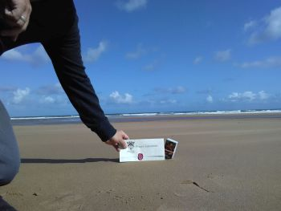 Omaha Beach near the Les Moulins Draw (dividing line of Dog Red/Easy Green companies) |
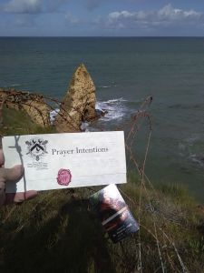 Pointe du Hoc - Army Rangers successfully scaled its cliffs on D-Day (http://armyhistory.org) |
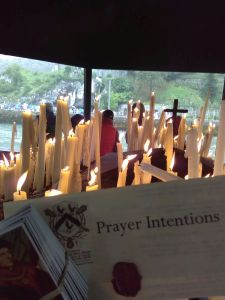 Candle shelter at Lourdes, where a candle was lit for your intentions |
|---|---|---|
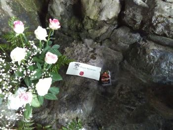 Within the grotto at Lourdes |
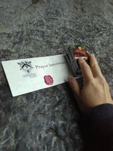 Within the grotto at Lourdes, directly underneath where the Virgin appeared |
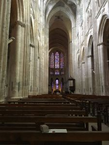 St. Gatien's Cathedral, Tours |
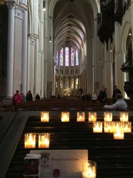 Chartres Cathedral |
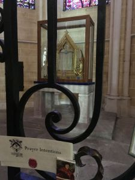 The relic of Mary's silk veil, Chartres Cathedral |
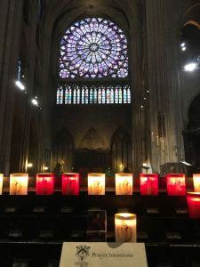 Notre Dame, Paris |
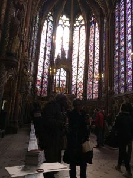 Sainte Chapelle, Paris |
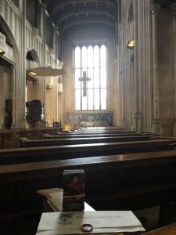 All Hallows Church in London, where St. Thomas More's body was temporarily interred after his execution |
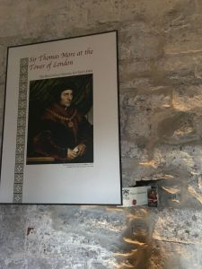 The cell of St. Thomas More within the Tower of London |
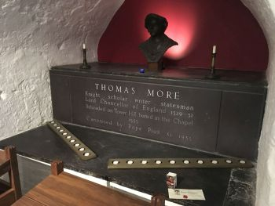 St. Thomas More's body is interred within the Tower of London |
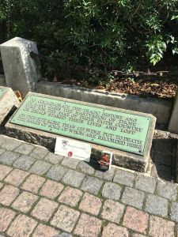 St. Thomas More's execution site outside the Tower |
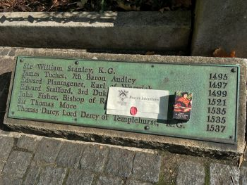 Execution site of St. Thomas More. St. John Fisher, the only bishop of England to remain faithful to the Church in opposition to the desires of Henry VIII, was also executed here. |
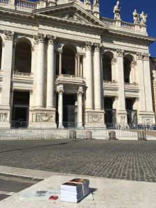 Church of St. John Lateran, Rome |
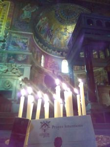 Church of St. Cecilia, Rome |
As my parents and I toured the necropolis below St. Peter's Basilica in Rome, I left your intentions on a stone shelf near the bones of St. Peter, directly beneath the high altar.
{kind=link}
{kind=link}
{kind=link}
{kind=link}
{kind=link}
{kind=link}
{kind=link}
{kind=link}
{kind=link}
{kind=link}
{kind=link}
{kind=link}
{kind=link}
{kind=link}
{kind=link}
{kind=link}
{kind=link}